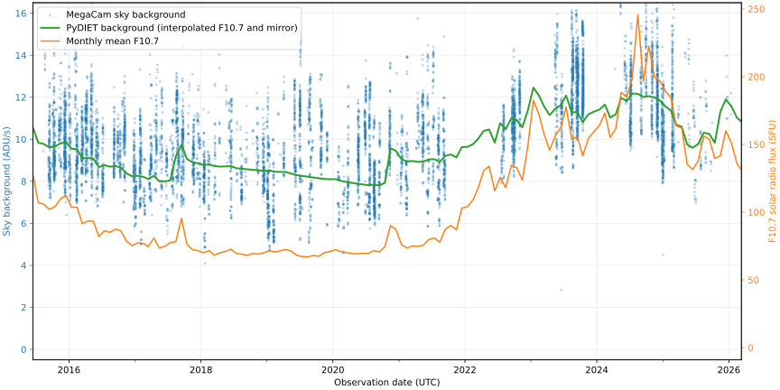

Model validation
The quantities predicted by PyDIET can be checked against measurements from science and calibration exposures. Such comparisons must use the same filter, exposure time, observing conditions, and instrument configuration in the model and in the observations. The following plots compare the measured sky background, photometric zero-point, and SNR with the corresponding PyDIET predictions.
Sky background
The sky background contributes photon noise to an observation and therefore limits the SNR, especially for faint sources. A brighter sky produces more noise and lowers the SNR for otherwise identical observations. Its level varies with quantities such as filter, airmass, lunar illumination, solar activity, and time-dependent instrumental throughput.
The background rate can be measured in reduced exposures from source-free pixels or source-masked regions, after accounting for detector signatures and the exposure time. These measurements can then be compared with PyDIET predictions evaluated for the observing conditions recorded for each exposure.
Time dependency
Solar activity and mirror degradation are the two main factors that prevent sky background rates from remaining stable from run to run. Using solar activity records in the form of monthly means of solar radio fluxes, and telescope mirror recoating logs, one can configure PyDIET accordingly and compare the predicted sky background rates to those measured on individual exposures in a given filter. Such comparisons (Fig. Fig. 10) show good agreement between the observed variations and those predicted by the model.

Fig. 10 Measured sky background rate in the MegaCam gri filter (in ADU/s) as a function of time (blue points), compared to the monthly average solar activity (orange line) and the PyDIET prediction (green line). The measurements only include photometric exposures taken during dark nights at airmass < 1.4. The PyDIET model assumes an airmass of 1.2, and accounts for both interpolated solar activity, and mirror ageing.
Photometric zero-point
The photometric zero-point describes the conversion between a source magnitude and the signal recorded by the instrument. A higher zero-point corresponds to greater sensitivity: a source of fixed magnitude produces more detected signal and consequently reaches a higher SNR, all else being equal. Changes in atmospheric transparency and instrumental throughput can therefore appear as changes in the measured zero-point.
Zero-points can be derived from photometric exposures by comparing measured count rates for suitable stars with calibrated catalogue magnitudes. After applying the same photometric conventions and selecting observations of appropriate quality, their values can be plotted against predictions made for the matching filter, airmass, and instrumental state.
Signal-to-Noise Ratio
The achieved SNR reflects both sides of the comparison: the zero-point sets the detected source signal, while the sky background contributes to its noise. It also depends on the source brightness, exposure time, image quality, detector noise, and the method used to measure the source flux.
An observational SNR can be estimated from the measured flux and its photometric uncertainty, or from the scatter of repeated measurements of similar sources. Comparing these values with PyDIET predictions for the same sources and observing conditions provides an end-to-end validation of the model. Trends with source magnitude, exposure time, or observing conditions can reveal whether discrepancies originate mainly in the predicted source signal, background level, or noise model.